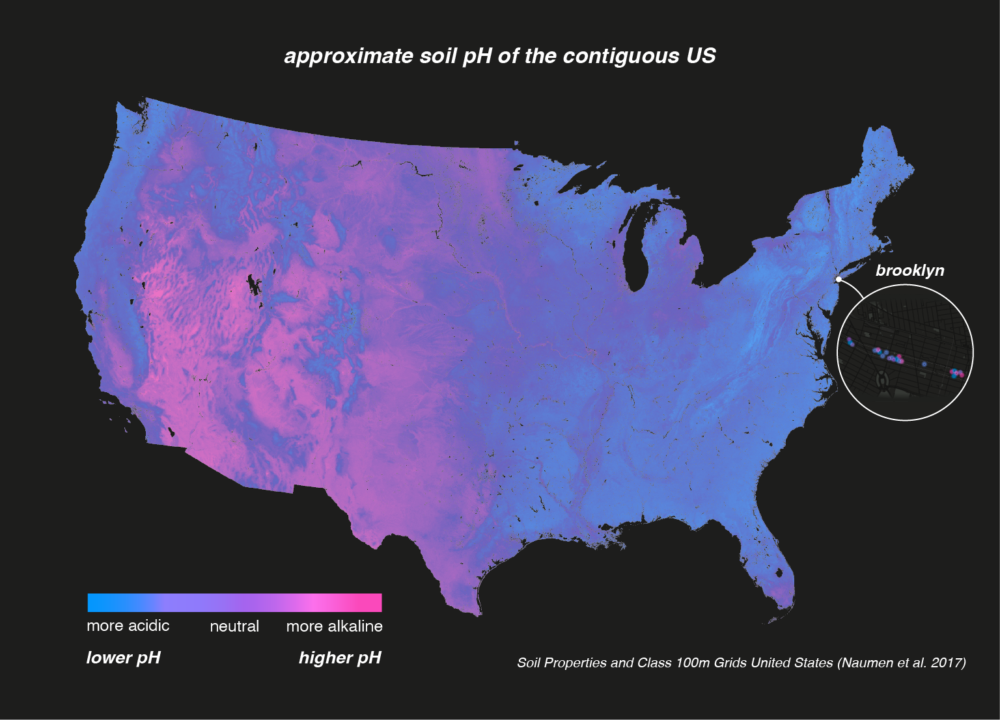
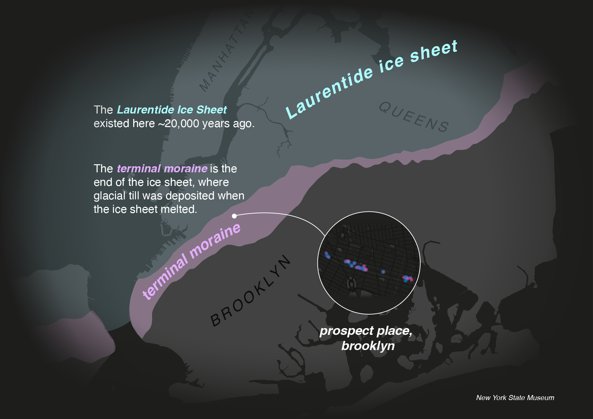

What the flowers around us say about the earth beneath our feet
In mid-June, the streets of Brooklyn fill with colorful spheres of petals, ranging from cornflower blue to violet to neon pink.
Hydrangeas are hardy plants with visually striking flowers. But they're worth your attention for another reason: their petals broadcast information about the soil beneath them.
Prospect Place's acidic average soil pH tracks to USA regional soil pH estimates, although there's a lot of variation in soil pH locally. Soil pH is determined in part by climate. Rainier, moister regions like the Northeast (including Brooklyn), the Southeast and the Pacific Northwest generally have more acidic (lower pH) soil. Dryer areas like the West and Southwest have more alkaline (higher pH) soil.

Soil pH is also determined by the underlying rock beneath the soil. Low-pH granite rock in the East creates more acidic soil, while high-pH limestone and shale in the West creates more alkaline soil.
According to the Urban Soil Institute, the area of Brooklyn around Prospect Place is primarily pavement and buildings, with a till substratum soil type. Soil around pavement and buildings is prone to manmade chemical disturbances from road salts and concrete, but these disturbances are alkaline in nature and tend to increase overall soil pH. This potential for higher pH didn't seem to noticeably skew Prospect Place hydrangeas' lower soil pH.
I was surprised to find that till substratum is also known as glacial till - sediment deposited from a glacier. Glacial sediment tends to create soil with lower pH.
New York City was built on the precipice of the Laurentide ice sheet that existed some 20,000 years ago. Around 13,000 years ago, this ice sheet melted, with its terminal moraine (or end of the ice sheet) landing along the path of the hydrangeas on Prospect Place.
The terminal moraine accumulates glacial debris as the ice sheet travels, and when the ice sheet melts, it deposits acidic glacial till soil along its path.

This glacial till is as deep as 10-30 meters beneath the surface of Brooklyn's soil, via the New York State Museum. Still, with the amount of human disturbance in New York City soil, it's tricky to definitively attribute 20,000 year old glaciers directly to today's soil pH.
All the same, it's fascinating to think of hydrangeas broadcasting some 20,000 year old soil information through their blooms.
What do the flowers around you say about the earth beneath your feet?
Hydrangea colors, anthocyanin, aluminum, and pH (Link)
NYC: Brooklyn soil (Link)
NYC drinking water 2024 report (Link)
Determining factors of regional pH (Link)
National approximate soil pH data (Data)
(Methodology)
Laurentide ice sheet in New York (link)
New York State Museum glacial maps (link)